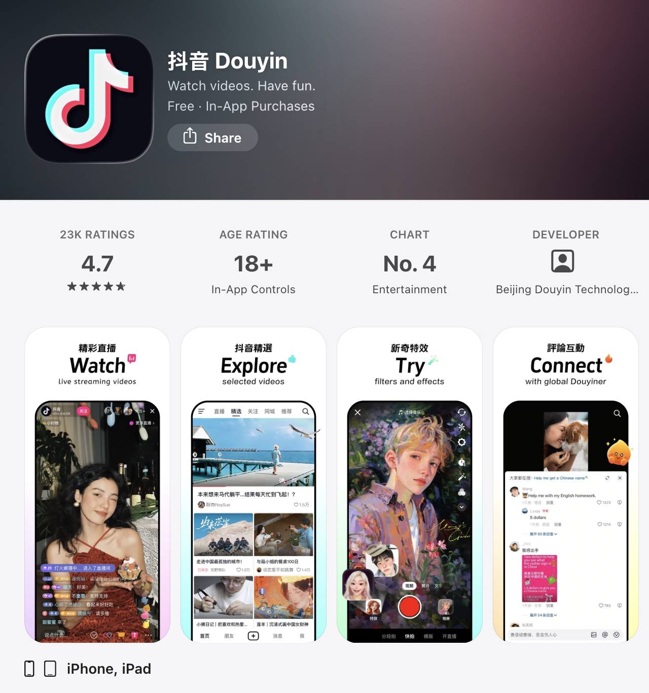
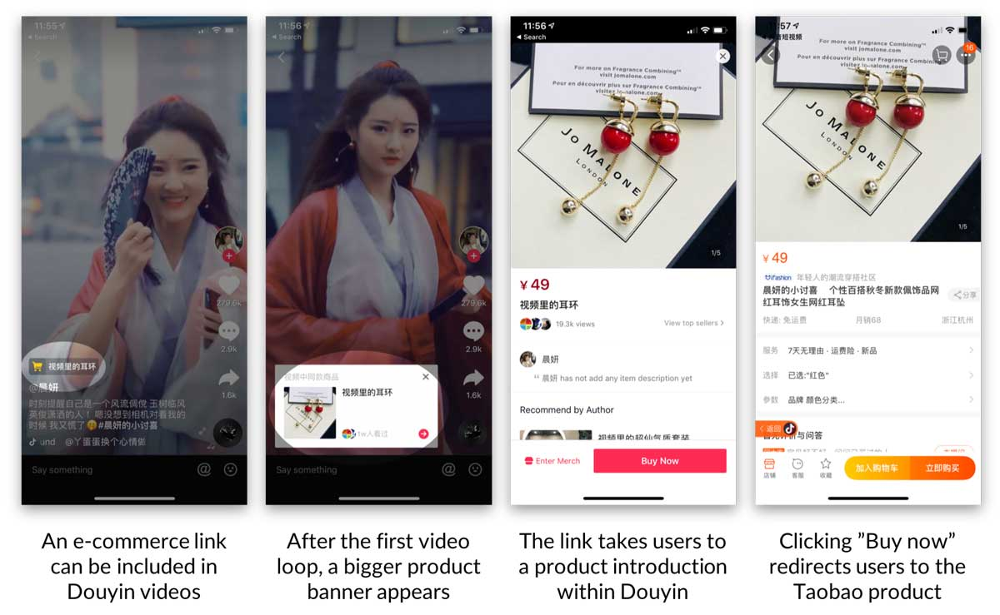

Douyin
Douyin is the Chinese version of the TikTok app, developed by Bytedance and launched in 2016. It’s a social application consisting of short-formed video content and livestreaming, using hyper-optimized AI recommendation algorithms to deliver content to audiences based on their interest. Compared to TikTok, Douyin developed more mature e-commerce functionality that is integrated directly to the platform.

Instead of relying on traditional storefronts with text and photo describing products, Douyin uses video-native content and livestreaming to create a more engaging and immersive shopping experience, where consumers can purchase products directly from the video content or livestream. By combining entertainment with interaction between creators and their audiences, Douyin popularized the concept of “Interest E-Commerce”, triggering spontaneous purchase during entertainment consumption. Furthermore, Douyin helps secure sales through its integrated shopping cart and in-app payment system (Douyin Pay), allowing customers to move seamlessly from product discovery to purchase without leaving the platform.

Following the outbreak of COVID-19, livestream shopping developed into a major form of e-commerce as consumers became increasingly accustomed to shopping from home. Influencers on Douyin can demonstrate products, interact with viewers, and offer flash deals through livestreaming, effectively bringing a storefront into consumers’ homes and reaching many households simultaneously. This creates a highly immersive approach to digital commerce. With over 750 million monthly active users in 2025 (Dudarenok, 2026), Douyin has secured its position as one of the largest players in China’s e-commerce market through its combination of AI-powered recommendations, short-form entertainment, immersive livestreaming, and seamless e-commerce and payment systems.